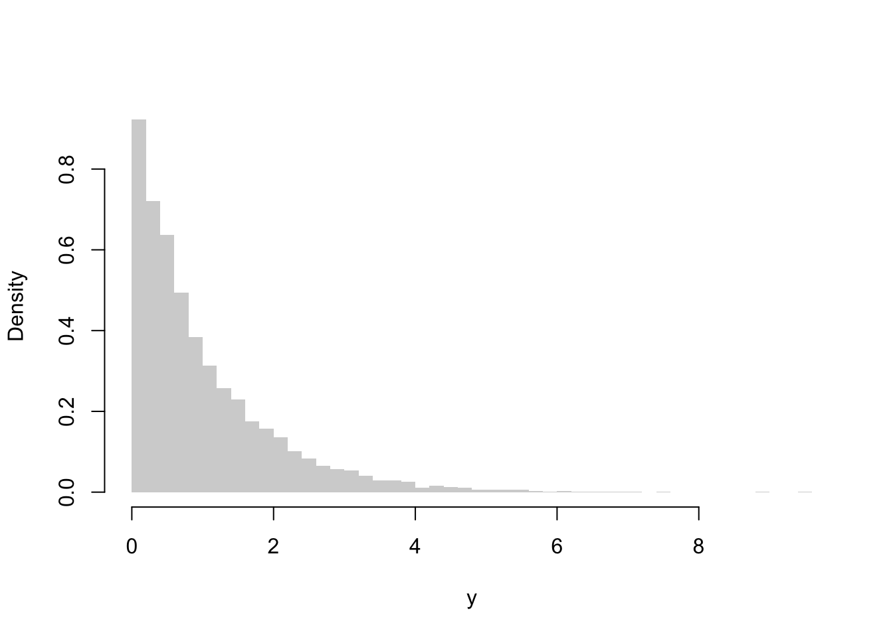

2.1 Quantiles and ranks
We now show that there is an alternative approach to specify a probability measure on \(\mathbb{R}.\) Let \(Y\) be a random variable with cumulative distribution function \(F_Y.\) For \(\tau\in(0,1),\) the \(\tau\)-th quantile of \(Y\) is the real number \(Q_Y(\tau)\) defined via \[\begin{equation} Q_Y(\tau) := \inf\{y\in\mathbb{R}\colon\, F_Y(y)\ge\tau\}. \end{equation}\] The function \(\tau \mapsto Q_Y(\tau)\) from \((0,1)\) to \(\mathbb{R}\) is called the quantile function of \(Y\) (also known as its generalized inverse of \(F_Y\)). Writing \(F = F_Y\) and \(Q = Q_Y\) for simplicity, it is an exercise (see van der Vaart (1998), Chapter 21) to check that \(Q\) is non-decreasing and left-continuous and that, for any \(y\in\mathbb{R}\) and \(\tau\in(0,1),\) one has \[\begin{equation} Q(\tau)\le y \quad \textsf{if and only if}\quad \tau\le F(y). \end{equation}\] The latter equivalence has at least two important consequences: first, it shows that3 \(F(y) = \sup\{\tau\in(0,1)\colon\,Q(\tau)\le y\}\) and so \(F\) and \(Q\) are entirely recoverable from one another: knowing \(F\) we know \(Q\) and vice-versa. Second, one sees that whenever \(U\) is a uniform random variable on the unit interval \([0,1),\) it holds that \(Q(U)\) has cumulative distribution function \(F,\) that is, \(Q(U)\) and \(Y\) are equal in distribution. This result is sometimes called the Fundamental Theorem of Simulation.4 In the same spirit as in the preceding section, we can say that if our aim is to build a model to quantify uncertainty about a scalar phenomenon, all we have to do is to propose a non-decrasing, left-continuous function \(Q\colon(0,1)\to\mathbb{R}.\) Such functions exhaust, in a one-to-one fashion, the category of univariate probability measures.
We have seen that univariate probability distributions are entirely characterized by their cumulative distribution functions, which in turn are entirely characterized by their corresponding quantile functions. A quantile function, notwithstanding, has the additional benefit of being not only a univariate probability model, but also a recipe to simulate from that model.
Example 2.2 Fix a real number \(\lambda>0,\) and let \(Q\colon(0,1)\to\mathbb{R}\) be defined by \[\begin{equation} Q(\tau) := -\frac{\log(1-\tau)}\lambda,\qquad \tau\in(0,1). \end{equation}\] Notice that \(Q\) is a quantile function, being strictly increasing and continuous.
Now let \(\Omega := [0,1),\) put \(\mathscr{F} := \hphantom{\!}\) “the collection of Borel subsets of \(\Omega\),” and let \(\mathbf{P}\) be the Lebesge measure on \((\Omega,\mathscr{F}),\) that is, \(\mathbf{P}\) is the unique Borel probability measure on \([0,1)\) for which the identity \(\mathbf{P}[a,b)=b-a\) holds for all \(0\le a<b\le1.\) In this setup, define the random variable \(Y\) through \[\begin{equation} Y(\omega) := Q(\omega),\qquad \omega\in\Omega. \end{equation}\] What is the distribution of \(Y\)? We can compute this directly: for \(y\in\mathbb{R},\) we have \[\begin{align} \mathbf{P}[Y > y] &= \mathbf{P}\{\omega\in[0,1)\colon\, -\log(1-\omega)>\lambda y\}\\ &= \mathbf{P}\{\omega\in[0,1)\colon\, \omega > 1 - \mathrm{e}^{-\lambda y}\}. \end{align}\] Therefore, \(\mathbf{P}[Y>y] = 1\) for \(y\le0\) and, for \(y>0,\) \[\begin{align} \mathbf{P}[Y>y] = \mathbf{P}[1-\mathrm{e}^{-\lambda y}, 1) = 1 - (1-\mathrm{e}^{-\lambda y}) \end{align}\] by the definition of the Lebesgue measure \(\mathbf{P}.\) It follows that \[ F_Y(y) = 1-\mathrm{e}^{-\lambda y},\qquad y\ge0 \] and \(F_Y(y) = 0\) otherwise: \(Y\) is an Exponential random variable with parameter \(\lambda\).
Of course, a straightforward computation will tell us that \(Q_Y = Q.\) Accordingly, if we define the random variable \(U\) to be the identity function on \(\Omega,\) then clearly \(U\) has a Uniform\([0,1]\) distribution, and in this particular example not only are \(Q(U)\) and \(Y\) equal in distribution as we stressed earlier, but actually \(Q(U) = Y\) pointwise. In any case, the fact that \(Y = Q(U)\) allows us to simulate “from the distribution \(F_Y\),” as long as we have available a mechanism to generate pseudo-random uniform random variables. The r code below illustrates the idea, sampling \(n\) independent Uniform\([0,1]\) pseudo-random numbers \(u_1,\dots,u_n\) and displaying the histogram plot of \(Q(u_1),\dots,Q(u_n).\)
n = 10000
lambda = 1
Usample = runif(n)
Q = function(w) -log(1 - w)/lambda
hist(Q(Usample), probability = TRUE, border = NA, breaks = "Scott", xlab = "y", main = NA)
Exercise 2.1 Show that \(\mathbf{E}(Y) = \int_0^1 Q_Y(\tau)\,\mathrm{d}\tau.\)5
Exercise 2.2 Show that:
- \(\mathbf{P}[Y\le Q_Y(\tau)]\ge \tau\) and \(\mathbf{P}[Y\ge Q_Y(\tau)]\ge 1-\tau.\)
- \(F_Y(Q_Y(\tau)) = \tau\) if and only if \(F_Y\) is continuous at \(Q_Y(\tau).\)
Exercise 2.3 For \(\tau\in(0,1),\) let \(\rho_\tau\colon\mathbb{R}\to\mathbb{R}\) be defined through \[\begin{equation} \rho_\tau(u) = u(\tau - \mathbb{I}[u<0]),\quad u\in\mathbb{R}. \end{equation}\]
- Show that \(2\rho_\tau(u) = (2\tau-1)u + |u|.\)
- Show that \(\rho_\tau(u)\) is a convex function of \(u.\)
- Show that \(Y\) is integrable if and only if \(\rho_\tau(Y-y)\) is integrable for all \(y\in\mathbb{R}.\)
- Show that \(\rho_\tau(Y - y) - \rho_\tau(Y)\) is integrable for all \(y\in\mathbb{R}.\)6
- Show that, for all \(y\in\mathbb{R},\) one has \[\begin{equation} \mathbf{E}\rho_\tau\big(Y - Q_Y(\tau)\big) \le \mathbf{E}\rho_\tau(Y - y). \end{equation}\] Thus, the problem of minimizing the function \(y\mapsto \mathbf{E}\rho_\tau(Y -y)\) has at least one solution, and \(Q_Y(\tau)\in\arg\min_y \mathbf{E}\rho_\tau(Y-y).\) Hint: consider first the case when \(Y\) is absolutely continuous with density function \(f_Y.\) The general case follows from the fact that \(y\mapsto \mathbf{E}\rho_\tau(Y-y)\) is a convex function (verify this assertion!), and that if \(g\colon\mathbb{R}\to\mathbb{R}\) is a convex function then \(g(y^*)\) is a global minimum of \(g\) if and only if \(0\) is an element of the subdifferential of \(g\) at \(y^*\) — see Lemma 7.10 in Aliprantis and Border (2006).
- Show that, if \(g\colon(0,1)\to\mathbb{R}\) is any measurable function, then \[\begin{equation} \int_0^1\mathbf{E}\rho_\tau\big(Y - Q_Y(\tau)\big)\,\mathrm{d}\tau \le \int_0^1\mathbf{E}\rho_\tau\big(Y - g(\tau)\big)\,\mathrm{d}\tau. \end{equation}\]
Adopting the convention that \(\sup\{\tau\in(0,1)\colon\,2>3\} = 0.\)↩︎
A partial reciprocal to this result says that whenever \(F_Y\) is continuous the random variable \(F_Y\circ Y\) has a uniform distribution on the unit interval.↩︎
This identity is extremely useful as it allows us to bypass Lebesgue’s theory of integration in defining the integral \(\mathbf{E}(Y)\): indeed, the function \(\tau\mapsto Q_Y(\tau)\) is monotone, left-continuous and has well defined right limits; thus, \(Q_Y\) is Riemann integrable on any compact interval \([a,b]\subseteq (0,1).\) Now it is a matter of calling \(Y\) a \(\mathbf{P}\)-integrable function iff \(\lim_{a\downarrow0}\lim_{b\uparrow 1}\int_a^b |Q_Y(\tau)|\,\mathrm{d}\tau <\infty\) and then define \(\mathbf{E}(Y):=\int_0^1 Q_Y(\tau)\,\mathrm{d}\tau.\)↩︎
This item shows that the “correct” loss function to consider should be \(L(y) = \rho_\tau(Y - y) - \rho_\tau(Y)\) and not \(L(y) = \rho_\tau(Y-y)\) as one usually sees in the literature.↩︎